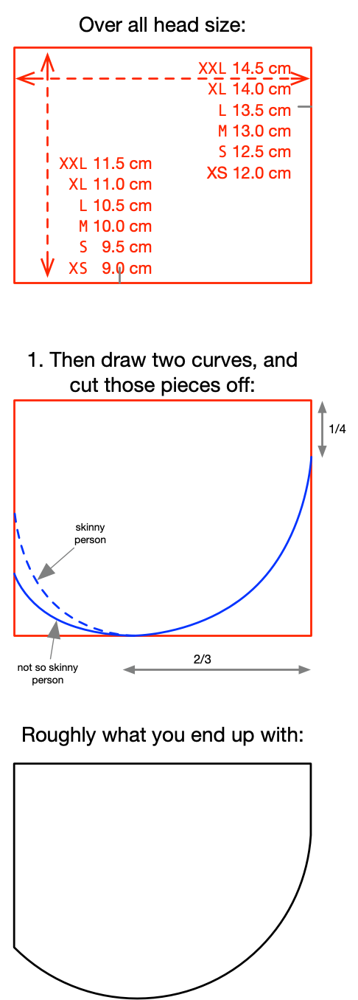

This is a modified "RagMask" for higher filtration using spunbond polypropylene (SBPP). The original Ragmask detailed here
here (great work Loren Brichter), but the MAX version has a template below. Don't bother printing it - measure it out wither a ruler and cut the paper with scissors.
Pics of an 480 gsm SBPP mask - about 92% protection according to the maker mask tests
Video of that mask being made:
Features
Easy to sew 3D shape for a tighter fit meaning far less air going around the mask
SBPP liner: between 2 to 16 layers depending on your desired filtration, and whether you're working in proximity to possibly infected people
Optional Cotton outer. Suggested: skip the cotton, but if ou must: low-thread cotton from any source
Two sturdy straps that are easy to tie behind your own head in a bow. Perhaps only if you have decent nose (variation to add two more straps if
that's not holding). There's no elastic involved so your ears are not under strain.
Washable: You can should should wash yours each evening if you wore it that day. Hand wash is preferable, but machine wash in a netting "laundry bag" is possible too
Ragmask Max uses a different template to the regular RagMask and has a slightly different
construction guide (see below).

You can print that PNG on it's own. Change the DPI until it's 1cm = 1cm. I started at 282% scale on an A4 page, Most likely though you are going to want to adjust the template based on the head shape of the recipient, or make a range of sizes and let the owner pick the one they like best.
Or, if you have no printer, you can a rectangle and a circle, then pencil the circle's arc onto the rectangle and snip off the excess
Materials
Fabric Science and spunbond polypropylene filtration effectiveness
The Maker Mask study and the standard layering formula allow us to plot a graph:
38 gsm fabric:
68 gsm fabric:
It is unlikely that a SBPP mask could be made that matches N95 or FFP2 performance - edge leaks will overcome any **calculated** filtration effectiveness. Most likely, there will be diminishing returns above a hoped-for 85% filtration.
Optional cotton outer
Some cotton with for the outer layer. I cut up a bedding set from the supermarket (180 thread count "polycotton"). Lower thread coun is fine too, if you have many layers of the SBPP
Buying SBPP
Most likey you're going to hve to buy SBPP cut from a roll.
These handy sheets did not require snipping up. My 4 8, and 12 layering discussed below is of this thickness.
There's a thicker 70 gsm version too that also works well. Sometimes this sold as "interfacing" but you have to be careful that it is spunbond SBPP.
Nose wire
Plastic coated metal for the nose wire. I used "Soft twist plant ties" for the garden like this which were £1 for 10 yards for me from a "dollar store" outlet. I've also used mains wire upcycled from a house rewiring (15A 230V core - live or neutral)
Others
Lastly, you'll need a sewing machine with a zigzag stitch, polyester thread, and scissors
Frequently Asked Questions (FAQ)
Can these be machine washed - yes
How good are these at filtering particles? Probably quite good - see "fabric science" above
Does the vertical ridge in the inside center of the mask tickle your skin? - No it's held away from your by the stiffness of the SBPP
How long can these be worn for without readjustment? The site maintainer has worn one for four hours at a time without adjustment.
How long can these be worn for without in total? They should be good for all day use
Does your own breath make the mask damp? On the outward-facing cotton layer, sometimes yes, but not the inside SBPP layers often dries as fast as it moistens
Will you be oxygen starved using this mask? No.
Construction
One will take ten minutes to do the sewing on a machine, assuming you have ready to go straps. Here's a video of the the site maintainer making an eight-layers of SBPP one:
If you make them in a batch, and don't keep cutting thread, then the time can drop to 8 minutes per mask
Step by step for four-layer SBPP liner/filter
Using high thread count cotton is a mistake - it may have better filtration than a single layer of SBPP, but each layer of cotton reduces breathability far more than each layer of SBPP. This could result in a mask that collapses onto your nostrils and lips as you breathe in. Consider not using a cotton outer at all.
Four layers of 38 gsm SBPP would give 53% filtration effectiveness on its own. Eight layers would give 78% filtration effectiveness on its own. You can make these masks without the cotton outer - most of the filtration is achieved though layering of the SBPP